Full Report
1) Introduction / Motivation
Breast cancer is a major global health burden and a leading cause of cancer-related death among women. While clinical characteristics such as tumour stage and histology inform prognosis, molecular biomarkers may offer additional insight into disease progression and survival. In this project, we describe patterns of clinical features and protein biomarkers in the BRCA dataset, assess whether biomarker levels differ across patient groups, build a regression model to predict survival status, and conduct basic survival analysis to explore factors associated with follow-up outcomes.
2) Data
Source and study population.
This project uses a de-identified, publicly available breast cancer dataset obtained from Kaggle (https://www.kaggle.com/datasets/amandam1/breastcancerdataset/code). The dataset includes 334 patients with primary breast cancer who underwent surgical treatment. For each patient, the file contains demographic information (age, gender), tumour characteristics (tumour stage, histology, ER/PR/HER2 receptor status), several protein biomarkers (Protein1–Protein4), treatment information (type of surgery), and follow-up data (date of surgery, date of last visit, and vital status).
Before analysis, observations with missing patient_id
were removed, as these corresponded to empty rows at the bottom of the
file. For the survival analysis, we restricted to patients with
non-missing dates of surgery and last follow-up, non-missing vital
status, and non-negative follow-up time, resulting in 317 patients
included in the Kaplan–Meier and log-rank analyses.
Data import and cleaning
brca_df_raw = read_csv("BRCA.csv") |>
janitor::clean_names() |>
filter(!is.na(patient_id)) #remove empty rows at the bottomVariables
After clean_names(), your key columns are:
patient_id: Unique identifier for each patient.age: Age at time of surgery (years), treated as a continuous covariate.gender: Patient sex (factor).protein1–protein4: Continuous protein biomarker measurements.tumour_stage: Clinical tumour stage at diagnosis (I, II, III), treated as an ordered factor.histology: Histological subtype of the breast tumour (categorical).er_status: Oestrogen receptor (ER) status (e.g., Positive/Negative).pr_status: Progesterone receptor (PR) status.her2_status: HER2 receptor status.surgery_type: Type of surgery performed (e.g., lumpectomy, mastectomy).
Time variables
- Clarify outcome: patient status (Alive/Dead).
date_of_surgery: Calendar date of the primary breast cancer surgery.date_of_last_visit: Date of last recorded follow-up visit.patient_status: Vital status at last follow-up (AliveorDead).
The primary outcome for this project is
patient_status, indicating whether the patient was
alive or dead at last follow-up. For survival analysis, we use
date_of_surgery and date_of_last_visit to
define follow-up time (in days) and combine this with
patient_status to create a time-to-event and censoring
indicator.
Clean data types
brca = brca_df_raw |>
mutate( #categorical variables
gender = factor(gender),
tumour_stage = factor(tumour_stage,
levels = c("I", "II", "III"),
ordered = TRUE),
histology = factor(histology),
er_status = factor(er_status),
pr_status = factor(pr_status),
her2_status = factor(her2_status),
surgery_type = factor(surgery_type),
patient_status = factor(patient_status,
levels = c("Alive", "Dead")),
#date variables
date_of_surgery = as.Date(date_of_surgery, format = "%d-%b-%y"),
date_of_last_visit = as.Date(date_of_last_visit, format = "%d-%b-%y"),
# survival
follow_up_time = as.numeric(date_of_last_visit - date_of_surgery),
event = case_when(
patient_status == "Dead" ~ 1L,
patient_status == "Alive" ~ 0L,
TRUE ~ NA_integer_
)
)3) Exploratory Data Analysis (EDA)
EDA 1. Summary Tables
Patient Characteristics Summary
brca %>%
select(age, gender, tumour_stage, histology, er_status, pr_status, her2_status, surgery_type, patient_status) |>
skimr::skim()| Name | %>%(…) |
| Number of rows | 334 |
| Number of columns | 9 |
| _______________________ | |
| Column type frequency: | |
| factor | 8 |
| numeric | 1 |
| ________________________ | |
| Group variables | None |
Variable type: factor
| skim_variable | n_missing | complete_rate | ordered | n_unique | top_counts |
|---|---|---|---|---|---|
| gender | 0 | 1.00 | FALSE | 2 | FEM: 330, MAL: 4 |
| tumour_stage | 0 | 1.00 | TRUE | 3 | II: 189, III: 81, I: 64 |
| histology | 0 | 1.00 | FALSE | 3 | Inf: 233, Inf: 89, Muc: 12 |
| er_status | 0 | 1.00 | FALSE | 1 | Pos: 334 |
| pr_status | 0 | 1.00 | FALSE | 1 | Pos: 334 |
| her2_status | 0 | 1.00 | FALSE | 2 | Neg: 305, Pos: 29 |
| surgery_type | 0 | 1.00 | FALSE | 4 | Oth: 105, Mod: 96, Sim: 67, Lum: 66 |
| patient_status | 13 | 0.96 | FALSE | 2 | Ali: 255, Dea: 66 |
Variable type: numeric
| skim_variable | n_missing | complete_rate | mean | sd | p0 | p25 | p50 | p75 | p100 | hist |
|---|---|---|---|---|---|---|---|---|---|---|
| age | 0 | 1 | 58.89 | 12.96 | 29 | 49 | 58 | 68 | 90 | ▂▇▇▅▂ |
This table summarizes the main clinical characteristics of the 334 patients in the dataset, including age, gender, tumour stage, histology, hormone receptor status, HER2 status, surgery type, and vital status at last follow up. It gives basic statistics such as the mean and spread for age, as well as counts and percentages for each category, and provides an overall picture of who is represented in this breast cancer cohort.
Protein Biomarker Summary
brca %>%
summarise(
across(starts_with("protein"),
list(mean = mean, sd = sd, min = min, max = max),
na.rm = TRUE)
)## # A tibble: 1 × 16
## protein1_mean protein1_sd protein1_min protein1_max protein2_mean protein2_sd
## <dbl> <dbl> <dbl> <dbl> <dbl> <dbl>
## 1 -0.0300 0.564 -2.34 1.59 0.947 0.912
## # ℹ 10 more variables: protein2_min <dbl>, protein2_max <dbl>,
## # protein3_mean <dbl>, protein3_sd <dbl>, protein3_min <dbl>,
## # protein3_max <dbl>, protein4_mean <dbl>, protein4_sd <dbl>,
## # protein4_min <dbl>, protein4_max <dbl>This table describes the four anonymized protein biomarkers in the dataset by reporting their mean, standard deviation, and observed range. These summaries help us see the typical expression level and variability of each protein across patients, which is useful context for later modeling and group comparisons.
EDA 2. Distribution Visualization
Age Distribution
brca %>%
ggplot(aes(x = age)) +
geom_histogram(bins = 30, fill = "steelblue", alpha = 0.7) +
labs(title = "Age Distribution of Breast Cancer Patients",
x = "Age", y = "Count")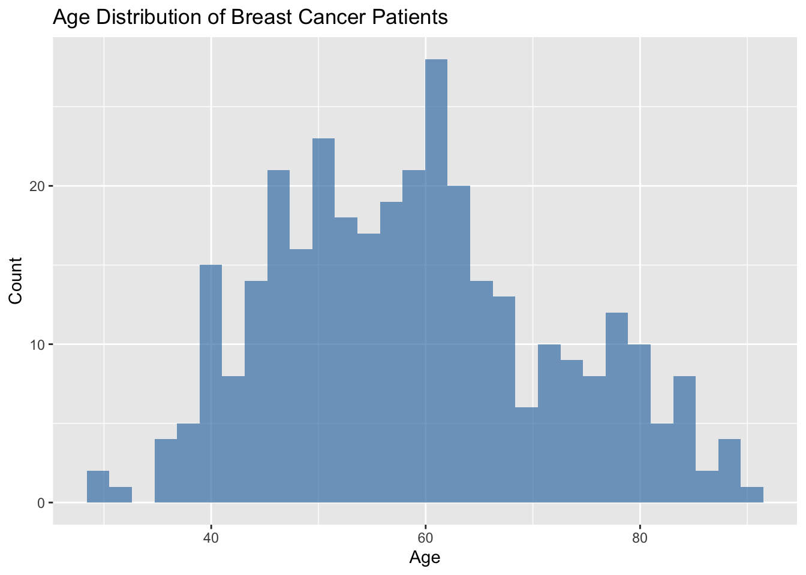
This histogram shows how patient age is distributed in the cohort. It highlights the most common age range at diagnosis or surgery and allows us to see whether the sample is concentrated in midlife, older age, or spread more evenly across the adult lifespan.Protein distribution
brca %>%
pivot_longer(starts_with("protein"), names_to = "protein", values_to = "value") |>
ggplot(aes(x=value)) +
geom_density(fill="pink", alpha=0.4) +
facet_wrap(~protein, scales="free") +
labs(title = "Distribution of Protein Biomarkers")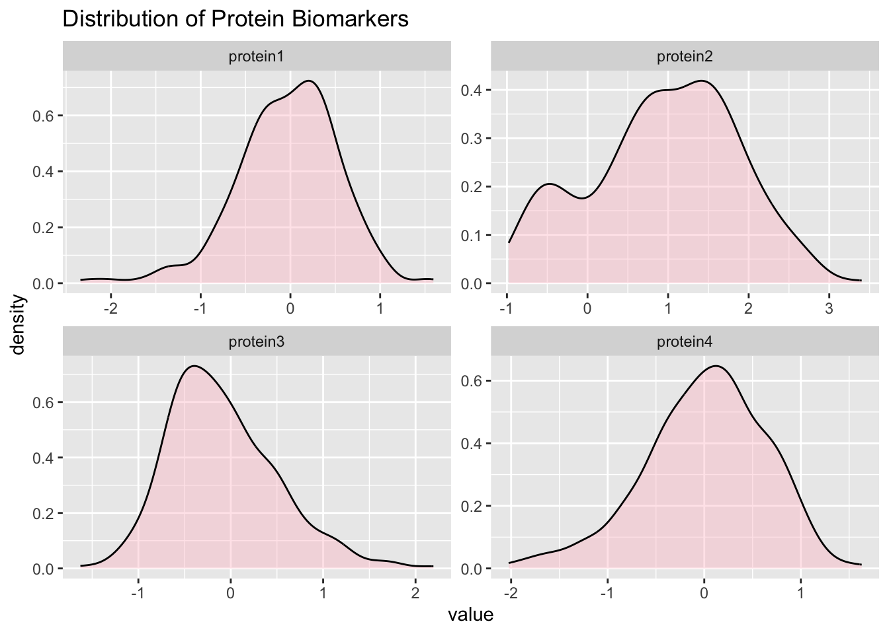
These density plots display the distribution of each of the four protein biomarkers across all patients. By looking at the shapes of the curves, we can see whether each biomarker is approximately symmetric or skewed, whether there are long tails, and whether any proteins appear to have multiple modes or outlying values.EDA 3. Classification Visulization
Carcinoma Type Classification
carcinoma_type_pie =
brca %>%
count(histology) %>%
mutate(
prop = n / sum(n),
label = scales::percent(prop, accuracy = 0.1)
) %>%
ggplot(aes(x = "", y = prop, fill = histology)) +
geom_col(color = "white") +
coord_polar(theta = "y") +
geom_text(aes(label = label),
position = position_stack(vjust = 0.5),
size = 3) +
labs(title = "Carcinoma / Histology Classification",
fill = "Histology") +
theme_void() +
theme(plot.title = element_text(hjust = 0.5))
carcinoma_type_pie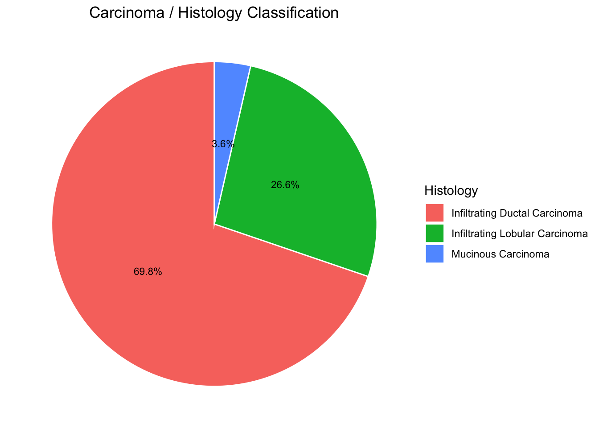
This pie chart summarizes the distribution of histologic tumour types in the dataset. The largest slice corresponds to infiltrating ductal carcinoma, reflecting that most patients in this cohort have IDC, while infiltrating lobular carcinoma and mucinous carcinoma make up smaller proportions. This mirrors the expected pattern in clinical practice, where IDC is the most common invasive breast cancer subtype.Infiltrating ductal carcinoma (IDC) is the most common breast cancer type. It begins in the milk ducts and grows into the surrounding breast tissue. As it progresses, IDC can spread through the lymphatic system or bloodstream to other parts of the body.
Mucinous carcinoma is a breast cancer subtype in which tumour cells grow within mucin, the main component of mucus. Mucin normally supports healthy cell function, but in this tumour type, the mucin produced by cancer cells becomes part of the mass. Although mucinous tumours can occur elsewhere in the body, they most often appear in the breast.
Infiltrating lobular carcinoma (ILC) starts in the lobules, the glands that produce milk. Because it is an invasive cancer, it extends beyond the lobule into nearby tissue, and over time can spread to other parts of the body.
tumour Stage Classification
tumour_stage_pie =
brca %>%
count(tumour_stage) %>%
mutate(
prop = n / sum(n),
label = scales::percent(prop, accuracy = 0.1)
) |>
ggplot(aes(x = "", y = prop, fill = tumour_stage)) +
geom_col(color = "white") +
coord_polar(theta = "y") +
geom_text(aes(label = label),
position = position_stack(vjust = 0.5),
size = 3) +
labs(title = "Tumour Stage Classification",
fill = "Tumour Stage") +
theme_void() +
theme(plot.title = element_text(hjust = 0.5))
tumour_stage_pie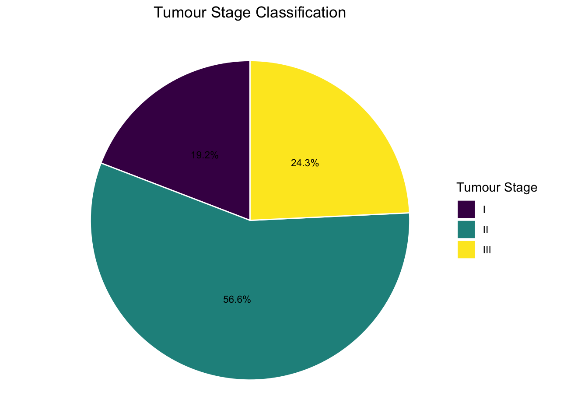
This pie chart shows how patients are distributed across tumour stages I, II, and III at the time of surgery. It allows us to see whether the dataset is dominated by early-stage disease, more advanced tumours, or a mix of both, which is important context when interpreting survival and biomarker patterns.General Patient Status (alive or dead)
general_status_pie =
brca %>%
count(patient_status) %>%
mutate(
prop = n / sum(n),
label = scales::percent(prop, accuracy = 0.1)
) %>%
ggplot(aes(x = "", y = prop, fill = patient_status)) +
geom_col(color = "white") +
coord_polar(theta = "y") +
geom_text(aes(label = label),
position = position_stack(vjust = 0.5),
size = 3) +
labs(title = "Patient Status",
fill = "Status") +
theme_void() +
theme(plot.title = element_text(hjust = 0.5))
general_status_pie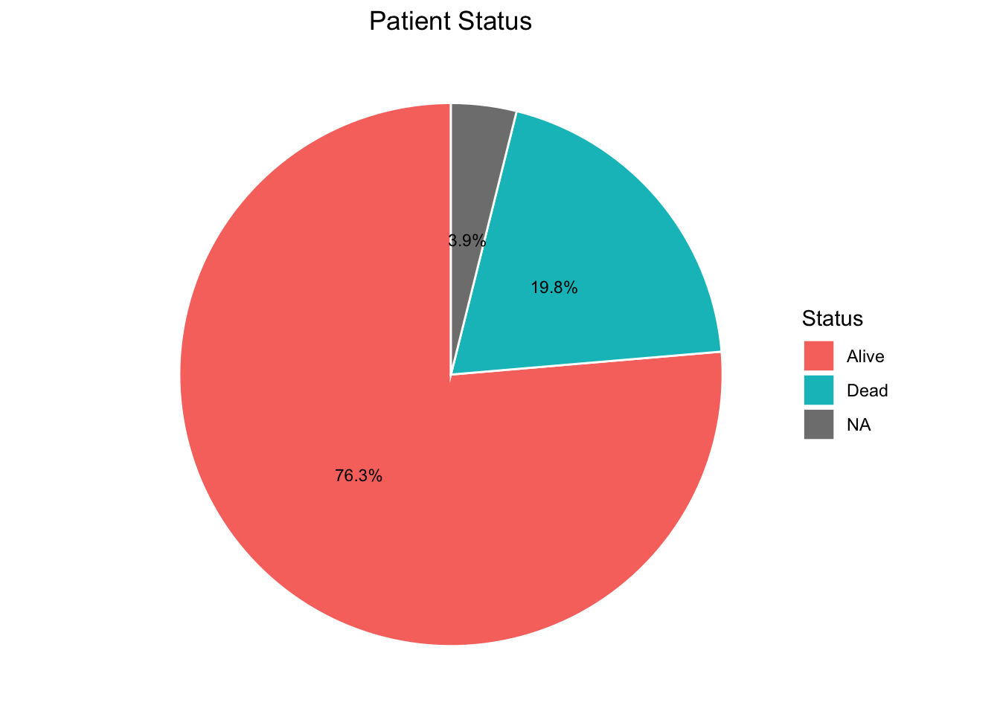
This pie chart displays the overall proportion of patients who were alive versus dead at their last recorded visit. It provides a simple summary of outcomes in this cohort and indicates the baseline event rate that our predictive models will try to capture.Patient status (alive or dead) based on tumour type
histology_status_plot =
brca %>%
count(histology, patient_status) %>%
group_by(histology) %>%
mutate(prop = n / sum(n)) %>%
ggplot(aes(x = histology, y = prop, fill = patient_status)) +
geom_col(position = "fill", color = "white") +
scale_y_continuous(labels = scales::percent_format(accuracy = 1)) +
labs(
title = "Patient Status by tumour Type (Histology)",
x = "Histology",
y = "Proportion within Histology",
fill = "Patient status"
) +
theme_minimal() +
theme(
axis.text.x = element_text(angle = 30, hjust = 1),
plot.title = element_text(hjust = 0.5)
)
histology_status_plot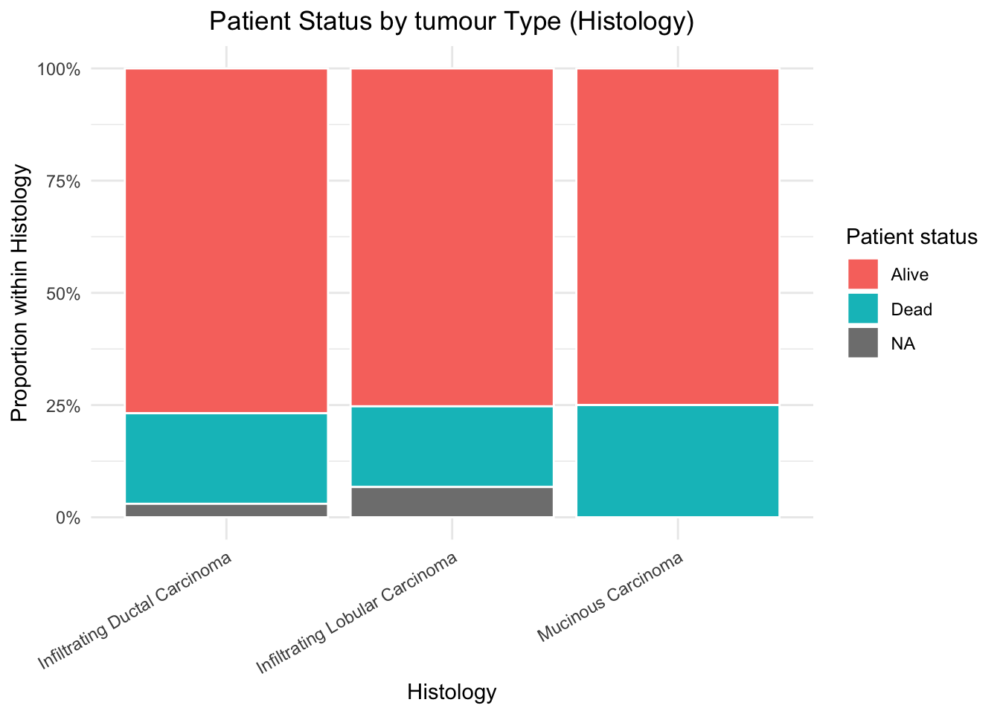
This stacked bar plot shows the proportion of patients who were alive or dead within each histologic tumour type. By comparing the height of the “dead” segment across histologies, we can see whether certain carcinoma types in this sample are associated with a higher proportion of deaths. In this dataset, mucinous carcinoma appears to have a slightly higher death proportion than the other histologic groups, although the absolute number of mucinous cases is relatively small.Patient status (alive or dead) based on tumour stage
tumour_stage_status_plot =
brca %>%
count(tumour_stage, patient_status) %>%
group_by(tumour_stage) %>%
mutate(prop = n / sum(n)) %>%
ggplot(aes(x = tumour_stage, y = prop, fill = patient_status)) +
geom_col(position = "fill", color = "white") +
scale_y_continuous(labels = scales::percent_format(accuracy = 1)) +
labs(
title = "Patient Status by Tumour Stage",
x = "Tumour stage",
y = "Proportion within Stage",
fill = "Patient status"
) +
theme_minimal() +
theme(
plot.title = element_text(hjust = 0.5)
)
tumour_stage_status_plot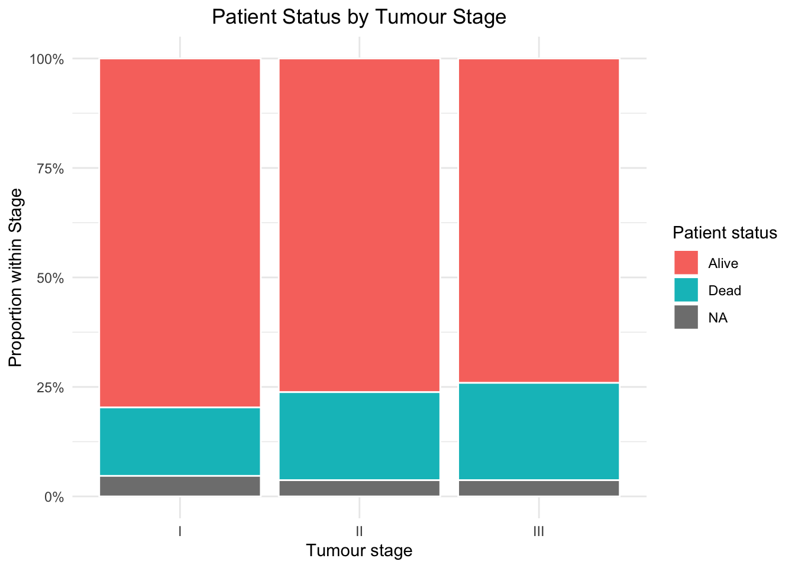
This stacked bar plot displays the proportion of patients who were alive or dead within each tumour stage. The figure shows that the fraction of deaths increases from stage I to stage III, consistent with the clinical expectation that more advanced tumours are associated with worse outcomes. This pattern supports using tumour stage as an important predictor in subsequent survival and logistic regression analyses.EDA 4. Stratified Summaries
Protein levels by tumour stage
brca %>%
pivot_longer(starts_with("protein"),
names_to = "protein",
values_to = "value") %>%
ggplot(aes(x = tumour_stage, y = value, fill = tumour_stage)) +
geom_boxplot(alpha = 0.8) +
facet_wrap(~ protein, scales = "free_y") +
labs(
title = "Protein Levels by Tumour Stage",
x = "Tumour Stage",
y = "Protein Level"
) +
theme_minimal() +
theme(
plot.title = element_text(hjust = 0.5),
legend.position = "none"
)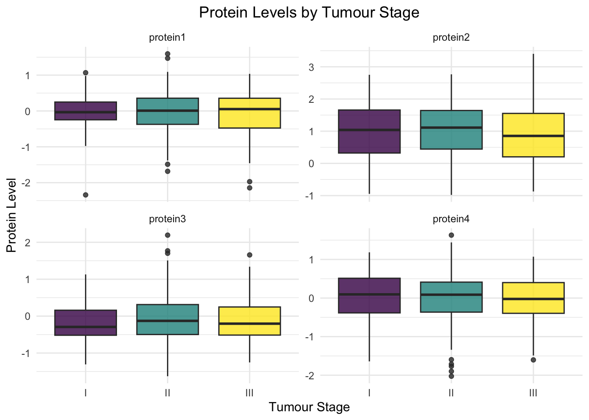
This plot compares the distribution of each protein biomarker across tumour stages I, II, and III. Each protein is shown in a separate panel to make the differences easier to see. The boxplots highlight how biomarker levels change with increasing stage, allowing us to visually assess whether later-stage tumours tend to have higher or lower protein expression. This helps identify proteins that may be associated with disease progression.
Protein levels by tumour type (histology)
brca %>%
pivot_longer(starts_with("protein"),
names_to = "protein",
values_to = "value") %>%
ggplot(aes(x = histology, y = value, fill = histology)) +
geom_boxplot(alpha = 0.8) +
facet_wrap(~ protein, scales = "free_y") +
labs(
title = "Protein Levels by tumour Type (Histology)",
x = "Histology",
y = "Protein Level"
) +
theme_minimal() +
theme(
axis.text.x = element_text(angle = 25, hjust = 1),
plot.title = element_text(hjust = 0.5),
legend.position = "none"
)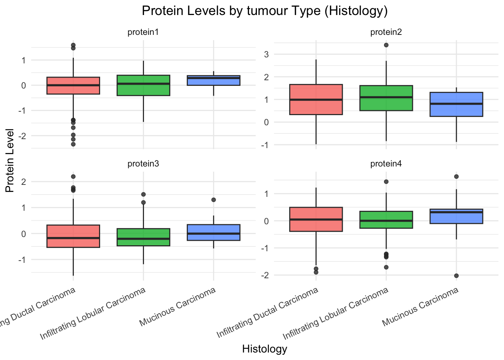
This plot shows the distribution of protein levels across the three histologic tumour types in the dataset: infiltrating ductal carcinoma, mucinous carcinoma, and infiltrating lobular carcinoma. By examining the boxplots for each protein within each histology group, we can explore whether certain biomarker patterns are more characteristic of specific tumour types. This can reveal potential diagnostic or subtype-specific differences in protein expression.EDA 5. Exploratory Statistical Analyses
Summary of age by status and Two-sample t-test (Alive vs Dead)
brca %>%
group_by(patient_status) %>%
summarise(
mean_age = mean(age, na.rm = TRUE),
sd_age = sd(age, na.rm = TRUE),
n = n()
)## # A tibble: 3 × 4
## patient_status mean_age sd_age n
## <fct> <dbl> <dbl> <int>
## 1 Alive 58.8 12.9 255
## 2 Dead 59.2 13.2 66
## 3 <NA> 59.2 14.3 13# Two-sample t-test (Alive vs Dead)
age_status_ttest =
t.test(age ~ patient_status, data = brca)
age_status_ttest##
## Welch Two Sample t-test
##
## data: age by patient_status
## t = -0.19146, df = 99.37, p-value = 0.8486
## alternative hypothesis: true difference in means between group Alive and group Dead is not equal to 0
## 95 percent confidence interval:
## -3.949756 3.254569
## sample estimates:
## mean in group Alive mean in group Dead
## 58.80392 59.15152We first compared age between patients who were alive and those who had died at last follow up. Mean age was 58.8 years among survivors and 59.2 years among those who died, with very similar standard deviations. A Welch two-sample t-test (t = −0.19, p = 0.85) showed no evidence of a difference in mean age between the two groups. Based on this, age does not appear to be a strong discriminator of survival status in this cohort, although we still consider it clinically important enough to include as a covariate in later models.
Contingency table: tumour stage x status
stage_status_tab =
brca %>%
count(tumour_stage, patient_status) %>%
tidyr::pivot_wider(
names_from = patient_status,
values_from = n,
values_fill = 0
)
stage_status_tab## # A tibble: 3 × 4
## tumour_stage Alive Dead `NA`
## <ord> <int> <int> <int>
## 1 I 51 10 3
## 2 II 144 38 7
## 3 III 60 18 3# Chi-square test of independence
stage_status_chisq =
chisq.test(as.matrix(stage_status_tab[ , -1]))
stage_status_chisq##
## Pearson's Chi-squared test
##
## data: as.matrix(stage_status_tab[, -1])
## X-squared = 1.0913, df = 4, p-value = 0.8956We next examined whether survival status was associated with tumour stage using a chi-square test of independence. Counts of alive and dead patients were similar across stages I, II, and III. The chi-square test (χ² = 1.09, df = 4, p = 0.90) provided no statistical evidence that the distribution of survival status differs by stage in this dataset. This suggests that, although more advanced disease is clinically expected to have worse outcomes, our sample does not show a strong stage–mortality association, possibly due to limited sample size or follow-up time. We still retain tumour stage as a key predictor in our logistic regression because of its clear clinical relevance.
Contingency table: histology x status
histology_status_tab =
brca %>%
count(histology, patient_status) %>%
tidyr::pivot_wider(
names_from = patient_status,
values_from = n,
values_fill = 0
)
histology_status_tab## # A tibble: 3 × 4
## histology Alive Dead `NA`
## <fct> <int> <int> <int>
## 1 Infiltrating Ductal Carcinoma 179 47 7
## 2 Infiltrating Lobular Carcinoma 67 16 6
## 3 Mucinous Carcinoma 9 3 0# Chi-square test of independence
histology_status_chisq =
chisq.test(as.matrix(histology_status_tab[ , -1]))
histology_status_chisq##
## Pearson's Chi-squared test
##
## data: as.matrix(histology_status_tab[, -1])
## X-squared = 3.1484, df = 4, p-value = 0.5333We also tested for an association between histologic tumour type and survival status. Infiltrating ductal carcinoma, infiltrating lobular carcinoma, and mucinous carcinoma all had broadly similar proportions of deaths. The chi-square test (χ² = 3.15, df = 4, p = 0.53) indicated no evidence that mortality differs across histology groups. This finding aligns with the stacked bar plot and suggests that histology alone is not a strong predictor of survival in this sample, although we still consider it as a descriptive variable and a potential adjustment factor in modeling.
protein_cor =
brca %>%
select(starts_with("protein")) %>%
cor(use = "complete.obs")
protein_cor## protein1 protein2 protein3 protein4
## protein1 1.0000000 0.23814130 -0.12948243 0.28034308
## protein2 0.2381413 1.00000000 -0.41582485 0.08823857
## protein3 -0.1294824 -0.41582485 1.00000000 0.06531565
## protein4 0.2803431 0.08823857 0.06531565 1.00000000corrplot(protein_cor, method = "color", tl.col = "black")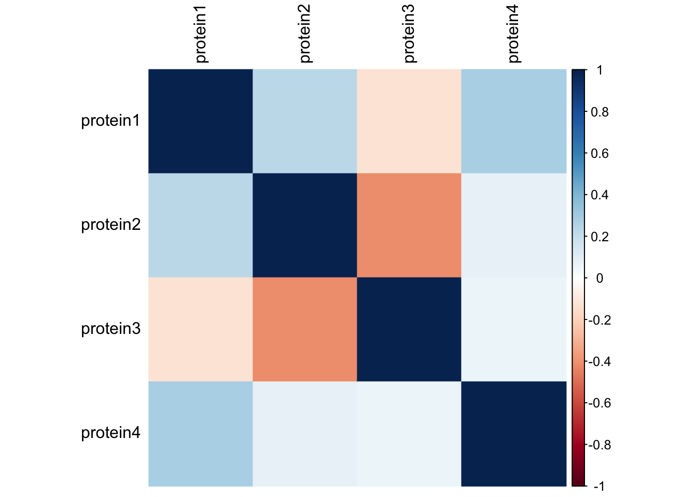
To assess how similar the four protein biomarkers are to one another, we computed a correlation matrix for Protein1–Protein4. This helps us evaluate whether the proteins provide overlapping information or capture different biological signals. Overall, the correlations were modest to moderate in magnitude. Protein1 showed moderate positive correlations with Protein2 and Protein4, while Protein2 and Protein3 displayed a moderate negative correlation. Other pairs were only weakly correlated. Importantly, no protein pair showed a very strong (|r| > 0.8) correlation, indicating that none of the biomarkers are redundant. This supports the inclusion of multiple protein markers in downstream models while keeping collinearity concerns relatively low.
The patterns and correlations uncovered above — including moderate relationships among certain proteins and no strong differences in biomarker levels by tumor stage/histology — guide our next steps. With this evidence, we proceed to fit a logistic regression to predict patient status, followed by ANOVA to test for differences in biomarker expression across clinical groups, and finally survival analysis. These analyses build directly on the exploratory structure identified in this section.
4) Multiple linear regression: Predicting patient status
Model specification
- Outcome: patient_status (Alive vs Dead).
- Predictors: age, tumour_stage, surgery_type, selected proteins.
- Brief rationale for selected predictors (based on EDA).
Model fitting
brca =
brca %>%
mutate(
target = ifelse(patient_status == "Dead", 1, 0)
)
brca_mlr =
brca %>%
glm(target ~ age + tumour_stage + surgery_type + protein1 + protein2 +
protein3 + protein4, data = .,
family = binomial(link = "logit")
)We fit a multiple logistic regression to predict mortality using
clinical predictors such as age, tumour_stage,
surgery_type, and the protein biomarkers
(protein1-protein4). These predictors were
selected based on exploratory analyses showing differences in survival
outcomes across different groups.
Model results
brca_mlr %>%
broom::tidy(exponentiate = TRUE, conf.int = TRUE)## # A tibble: 11 × 7
## term estimate std.error statistic p.value conf.low conf.high
## <chr> <dbl> <dbl> <dbl> <dbl> <dbl> <dbl>
## 1 (Intercept) 0.0874 0.811 -3.01 0.00264 0.0172 0.417
## 2 age 1.00 0.0112 0.287 0.774 0.981 1.03
## 3 tumour_stage.L 1.33 0.332 0.852 0.394 0.699 2.59
## 4 tumour_stage.Q 0.950 0.238 -0.218 0.828 0.591 1.51
## 5 surgery_typeModified… 1.75 0.463 1.21 0.225 0.723 4.52
## 6 surgery_typeOther 2.24 0.441 1.83 0.0670 0.972 5.57
## 7 surgery_typeSimple M… 1.63 0.493 0.995 0.320 0.625 4.41
## 8 protein1 0.846 0.277 -0.602 0.547 0.492 1.46
## 9 protein2 1.39 0.175 1.89 0.0583 0.991 1.98
## 10 protein3 1.34 0.262 1.12 0.264 0.799 2.24
## 11 protein4 1.44 0.250 1.47 0.143 0.892 2.39Model coefficient estimates were expressed as odds ratios. At the 0.05 level, none of the predictors were statistically significant, though the proteins generally expressed a weak positive association with mortality. Tumor stage showed a slight increase in odds of death, but the confidence intervals were wide. Overall, the clinical and protein predictors demonstrated a weak association with patient status.
Model performance (ROC, AUC)
roc_brca =
brca %>%
mutate(pred_prob = predict(brca_mlr, newdata = ., type = "response")) %>%
roc(target, pred_prob)
roc_brca %>%
ggroc() +
labs(
title = "ROC Curve for MLR Model",
x = "False Positive Rate",
y = "True Negative Rate"
) +
theme_minimal()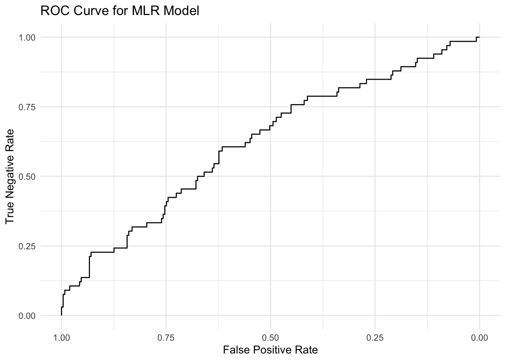
auc(roc_brca)## Area under the curve: 0.623The ROC curve suggests that the model was poor at distinguishing between patients who survived and passed away, with an AUC of 0.623.
Cross-validation
set.seed(123)
cv_df =
crossv_mc(brca, 5) %>%
mutate(
train = map(train, as_tibble),
test = map(test, as_tibble)
) %>%
mutate(
mlr_mod = map(
.x = train,
~ glm(
target ~ age + tumour_stage + surgery_type +
protein1 + protein2 + protein3 + protein4,
data = .x,
family = binomial(link = "logit")
)
),
pred_prob = map2(
.x = mlr_mod,
.y = test,
~ predict(.x, newdata = .y, type = "response")
),
auc = map2_dbl(
.x = pred_prob,
.y = test,
~ pROC::auc(pROC::roc(.y$target, .x))
)
)
cv_summary =
cv_df %>%
summarize(
mean_auc = mean(auc),
sd_auc = sd(auc)
)To assess generalizability, we performed a 5-fold cross-validation. The average cross-validated AUC was 0.543 with a standard deviation of 0.058. These values suggest that this model was minimally better than randomly predicting patient status.
5) ANOVA: Protein biomarkers across clinical groups
# identify protein biomarker columns (protein1–protein4)
protein_vars <- names(brca)[grepl("^protein", names(brca))]Do protein levels differ by tumour stage?
# group means by tumour_stage
means_tumour_stage <- brca |>
select(tumour_stage, all_of(protein_vars)) |>
pivot_longer(
cols = all_of(protein_vars),
names_to = "biomarker",
values_to = "value"
) |>
group_by(tumour_stage, biomarker) |>
summarise(
mean_value = mean(value, na.rm = TRUE),
n = sum(!is.na(value)),
.groups = "drop"
)
# one-way ANOVA for each protein ~ tumour_stage
anova_tumour_stage <- protein_vars |>
lapply(function(p) {
fit <- aov(reformulate("tumour_stage", response = p), data = brca)
tidy(fit) |>
slice(1) |>
transmute(
biomarker = p,
df = df,
f_statistic = statistic,
p_value = p.value
)
}) |>
bind_rows() |>
mutate(p_adj = p.adjust(p_value, method = "BH"))
means_tumour_stage## # A tibble: 12 × 4
## tumour_stage biomarker mean_value n
## <ord> <chr> <dbl> <int>
## 1 I protein1 -0.0144 64
## 2 I protein2 1.00 64
## 3 I protein3 -0.165 64
## 4 I protein4 0.0378 64
## 5 II protein1 -0.00773 189
## 6 II protein2 0.965 189
## 7 II protein3 -0.0654 189
## 8 II protein4 0.0180 189
## 9 III protein1 -0.0942 81
## 10 III protein2 0.862 81
## 11 III protein3 -0.0888 81
## 12 III protein4 -0.0315 81anova_tumour_stage## # A tibble: 4 × 5
## biomarker df f_statistic p_value p_adj
## <chr> <dbl> <dbl> <dbl> <dbl>
## 1 protein1 2 0.697 0.499 0.777
## 2 protein2 2 0.498 0.608 0.777
## 3 protein3 2 0.693 0.501 0.777
## 4 protein4 2 0.253 0.777 0.777For all four proteins (protein1–protein4), the global ANOVA tests were not statistically significant (all BH-adjusted p-values > 0.77). Thus, there is no statistical evidence of differences in biomarker expression by tumour stage in this cohort, and post-hoc pairwise comparisons were not pursued. Although small numerical differences in mean protein levels were observed, these differences were not statistically significant. This suggests that, in this dataset, tumour stage alone does not explain variation in protein biomarker expression. This could be due to biological similarity across stages, high within-group variability, or limited power for detecting subtle effects.
Do protein levels differ by histology?
# group means by histology
means_histology <- brca |>
select(histology, all_of(protein_vars)) |>
pivot_longer(
cols = all_of(protein_vars),
names_to = "biomarker",
values_to = "value"
) |>
group_by(histology, biomarker) |>
summarise(
mean_value = mean(value, na.rm = TRUE),
n = sum(!is.na(value)),
.groups = "drop"
)
# one-way ANOVA for each protein ~ histology
anova_histology <- protein_vars |>
lapply(function(p) {
fit <- aov(reformulate("histology", response = p), data = brca)
tidy(fit) |>
slice(1) |>
transmute(
biomarker = p,
df = df,
f_statistic = statistic,
p_value = p.value
)
}) |>
bind_rows() |>
mutate(p_adj = p.adjust(p_value, method = "BH"))
means_histology## # A tibble: 12 × 4
## histology biomarker mean_value n
## <fct> <chr> <dbl> <int>
## 1 Infiltrating Ductal Carcinoma protein1 -0.0500 233
## 2 Infiltrating Ductal Carcinoma protein2 0.930 233
## 3 Infiltrating Ductal Carcinoma protein3 -0.0804 233
## 4 Infiltrating Ductal Carcinoma protein4 0.00905 233
## 5 Infiltrating Lobular Carcinoma protein1 -0.00522 89
## 6 Infiltrating Lobular Carcinoma protein2 1.03 89
## 7 Infiltrating Lobular Carcinoma protein3 -0.139 89
## 8 Infiltrating Lobular Carcinoma protein4 -0.00825 89
## 9 Mucinous Carcinoma protein1 0.174 12
## 10 Mucinous Carcinoma protein2 0.684 12
## 11 Mucinous Carcinoma protein3 0.0840 12
## 12 Mucinous Carcinoma protein4 0.159 12anova_histology## # A tibble: 4 × 5
## biomarker df f_statistic p_value p_adj
## <chr> <dbl> <dbl> <dbl> <dbl>
## 1 protein1 2 1.02 0.362 0.557
## 2 protein2 2 0.887 0.413 0.557
## 3 protein3 2 0.876 0.417 0.557
## 4 protein4 2 0.372 0.690 0.690Across histologic subtypes, protein levels were visually and statistically similar, with substantial overlap between groups. All BH-adjusted ANOVA p-values were > 0.36, indicating no detectable expression differences by histology. Consequently, post-hoc pairwise comparisons were not performed.
Because no p-values are statistically significant, we check ANOVA assumptions!
Normality (per group per protein)
for (p in protein_vars) {
print(
ggqqplot(brca, x = p, facet.by = "tumour_stage",
title = paste("QQ-Plot:", p, "by tumour stage"))
)
}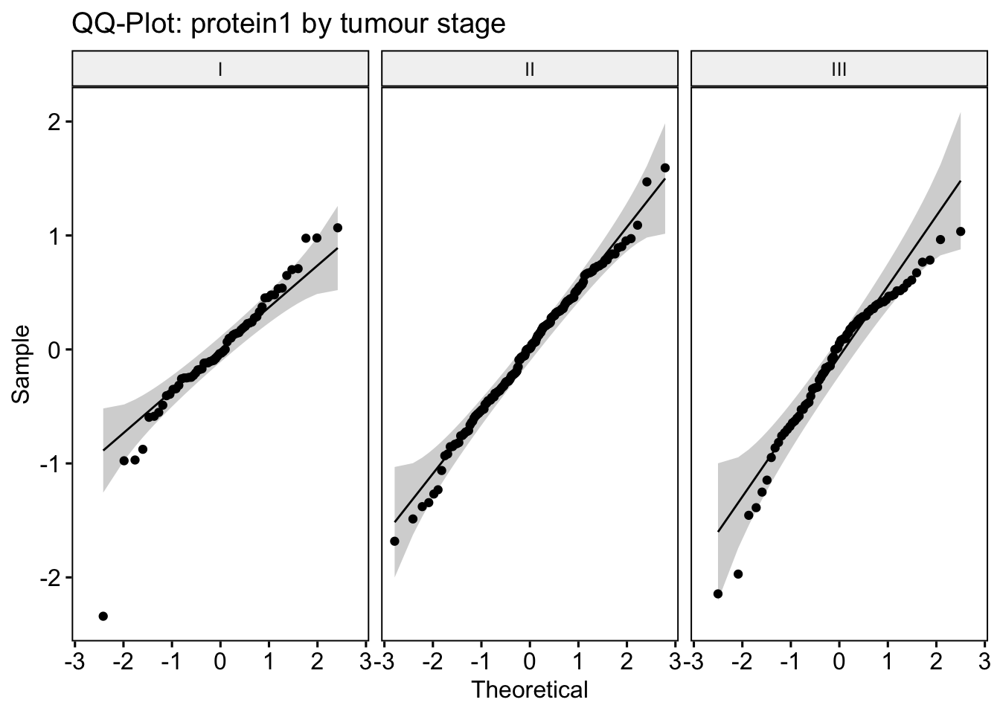
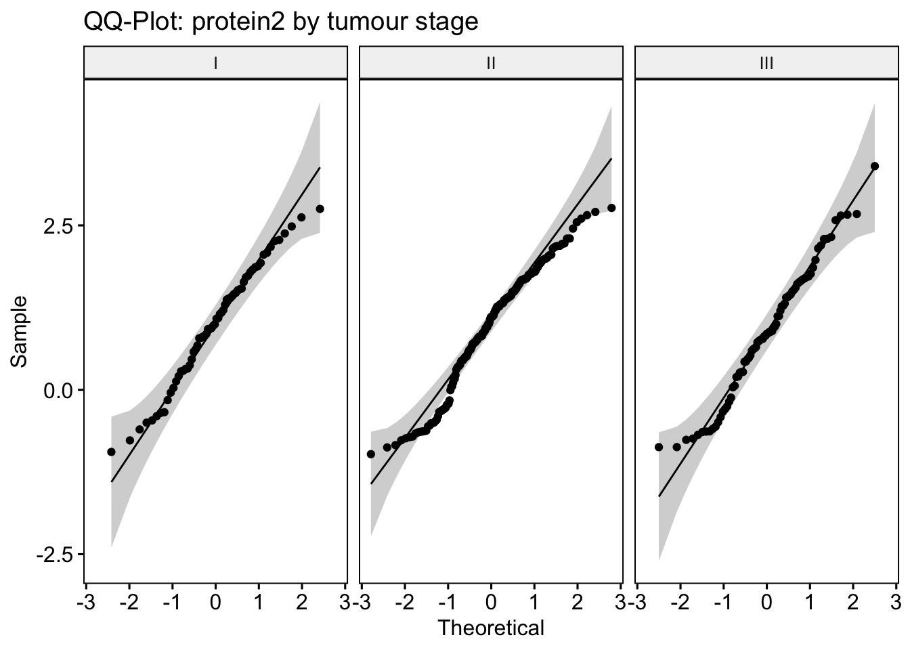

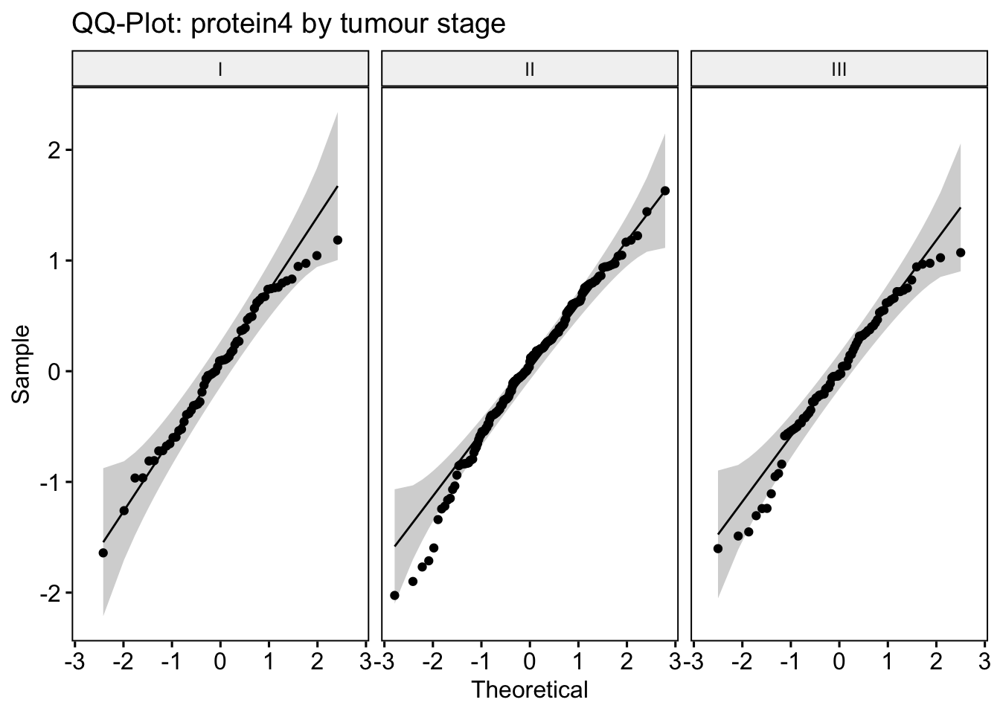
The QQ-plots for each protein by tumour stage were reasonably linear, suggesting that the normality assumption is acceptable for these ANOVA models.
Homogeneity of variances (Levene’s Test)
for (p in protein_vars) {
print(p)
print(leveneTest(brca[[p]] ~ brca$tumour_stage))
}## [1] "protein1"
## Levene's Test for Homogeneity of Variance (center = median)
## Df F value Pr(>F)
## group 2 1.7094 0.1826
## 331
## [1] "protein2"
## Levene's Test for Homogeneity of Variance (center = median)
## Df F value Pr(>F)
## group 2 0.5266 0.5911
## 331
## [1] "protein3"
## Levene's Test for Homogeneity of Variance (center = median)
## Df F value Pr(>F)
## group 2 0.6378 0.5291
## 331
## [1] "protein4"
## Levene's Test for Homogeneity of Variance (center = median)
## Df F value Pr(>F)
## group 2 0.0149 0.9852
## 331Levene’s tests indicated no significant variance differences across tumour stage groups for any protein (all p > 0.18). Thus, the assumption of equal variances is not violated for any protein, and standard one-way ANOVA is appropriate and valid. Overall, protein levels do not significantly differ by tumour stage in this dataset — not because ANOVA assumptions failed, but because any true effects are likely small relative to within-group variability.
Boxplot — Proteins by Tumour Stage
# Identify proteins
protein_vars <- names(brca)[grepl("^protein", names(brca))]
# Pivot long
brca_long_stage <- brca |>
select(tumour_stage, all_of(protein_vars)) |>
filter(!is.na(tumour_stage)) |>
pivot_longer(
cols = all_of(protein_vars),
names_to = "protein",
values_to = "value"
)
# Boxplots
ggplot(brca_long_stage, aes(x = tumour_stage, y = value, fill = tumour_stage)) +
geom_boxplot(outlier.alpha = 0.2, width = 0.6) +
geom_jitter(alpha = 0.4, width = 0.15, size = 1) +
facet_wrap(~ protein, scales = "free_y") +
scale_fill_brewer(palette = "Set2") +
labs(
title = "Protein Levels by Tumour Stage",
x = "Tumour Stage",
y = "Protein Expression"
) +
theme_bw() +
theme(
legend.position = "none",
strip.text = element_text(size = 12),
axis.title = element_text(size = 12),
plot.title = element_text(size = 14, face = "bold")
)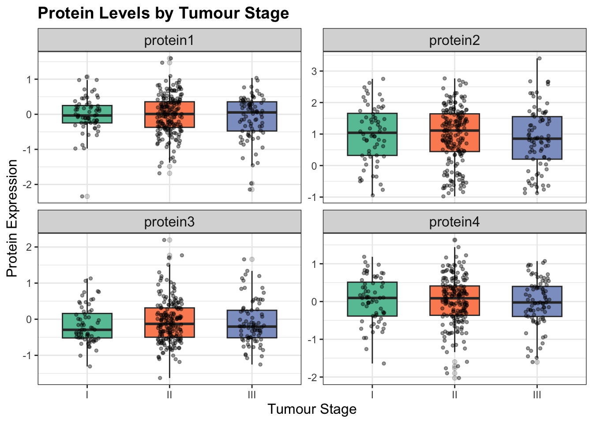
Protein1 expression showed very similar distributions across tumour stages I, II, and III. Median levels were close to zero in all three groups, and the interquartile ranges largely overlapped. Although a few outliers were present in each stage, the overall spread of values was comparable, suggesting no meaningful differences in Protein1 expression by tumor stage in this dataset. This interpretation perfectly matches our ANOVA result where p = 0.50 (not significant) and Levene’s test where p = 0.18 (equal variances). Similar patterns were observed for protein2–protein4, with substantial overlap in distributions across tumor stages. Protein1 expression showed very similar distributions across tumour stages I, II, and III. Median levels were close to zero in all three groups, and the interquartile ranges largely overlapped. Although a few outliers were present in each stage, the overall spread of values was comparable, suggesting no meaningful differences in Protein1 expression by tumour stage in this dataset. This interpretation perfectly matches our ANOVA result where p = 0.50 (not significant) and Levene’s test where p = 0.18 (equal variances). Similar patterns were observed for protein2–protein4, with substantial overlap in distributions across tumour stages.
Boxplot - Protein by Histology
# Identify protein variables
protein_vars <- names(brca)[grepl("^protein", names(brca))]
# Pivot to long format
brca_long_hist <- brca |>
select(histology, all_of(protein_vars)) |>
filter(!is.na(histology)) |>
pivot_longer(
cols = all_of(protein_vars),
names_to = "protein",
values_to = "value"
)
# Plot
ggplot(brca_long_hist, aes(x = histology, y = value, fill = histology)) +
geom_boxplot(outlier.alpha = 0.2, width = 0.6) +
geom_jitter(alpha = 0.4, width = 0.15, size = 1) +
facet_wrap(~ protein, scales = "free_y") +
scale_fill_brewer(palette = "Set2") +
labs(
title = "Protein Levels by Histology",
x = "Histologic Subtype",
y = "Protein Expression"
) +
theme_bw() +
theme(
legend.position = "none",
strip.text = element_text(size = 12),
axis.text.x = element_text(angle = 45, hjust = 1),
axis.title = element_text(size = 12),
plot.title = element_text(size = 14, face = "bold")
)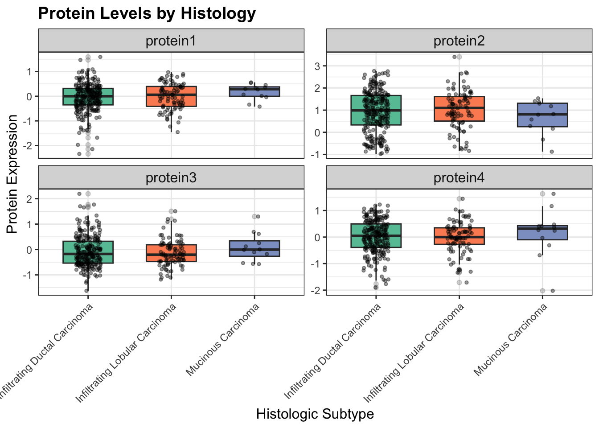
Across histologic subtypes, protein levels were visually similar with substantial overlap between groups, indicating no detectable expression differences by histology. This is consistent with our non-significant ANOVA results (all adjusted p-values > 0.36).
Final Conclusion: Overall, there was no evidence that protein biomarker expression differed meaningfully by tumour stage or histologic subtype in this dataset. Although there were small differences in average levels, the large amount of variability within groups and the overlap in distributions suggest that these biomarkers do not strongly reflect clinical disease stage or histology on their own. These findings indicate that additional clinical or molecular factors are likely needed to explain differences in disease characteristics, and that the proteins available in this dataset may have limited value as standalone indicators of disease severity.
6) Survival analysis
Time-to-event definition
- Follow-up time = Date_of_Last_Visit – Date_of_Surgery.
- Event indicator = 1 if Dead, 0 if Alive/unknown
brca_surv = brca |>
filter(!is.na(event), !is.na(follow_up_time), follow_up_time >= 0)
# Create Survival object
surv_obj = Surv(time = brca_surv$follow_up_time,
event = brca_surv$event)Kaplan–Meier curves
- Overall KM curve.
- Stratified curves (e.g., tumour stage, HER2 status).
Kaplan–Meier curves
An overall Kaplan–Meier curve was estimated to describe the distribution of survival time in the cohort. The plot displays the estimated survival probability over follow-up, with 95% confidence bands and a risk table indicating the number of patients at risk at selected time points.
km_overall = survfit(surv_obj ~ 1, data = brca_surv)
ggsurvplot(
km_overall,
conf.int = TRUE,
xlab = "Follow-up time (days)",
ylab = "Survival probability",
surv.median.line = "hv",
risk.table = TRUE
)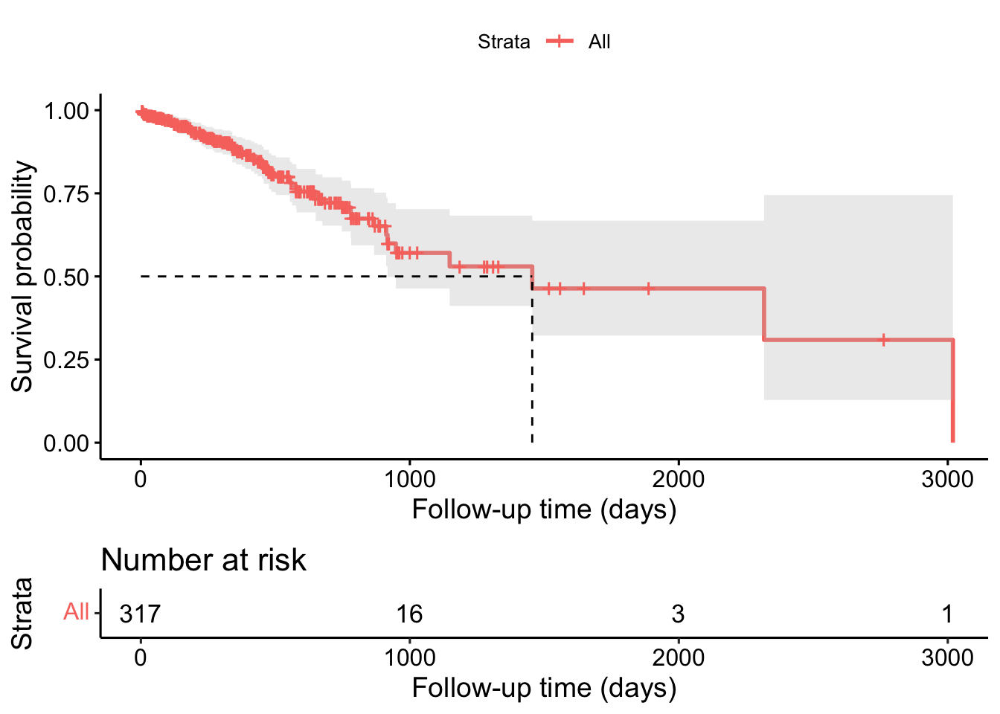
km_stage = survfit(surv_obj ~ tumour_stage, data = brca_surv)
ggsurvplot(
km_stage,
data = brca_surv,
conf.int = FALSE,
xlab = "Follow-up time (days)",
ylab = "Survival probability",
legend.title = "Tumour stage",
risk.table = TRUE,
pval = TRUE # shows log-rank p-value on the plot
)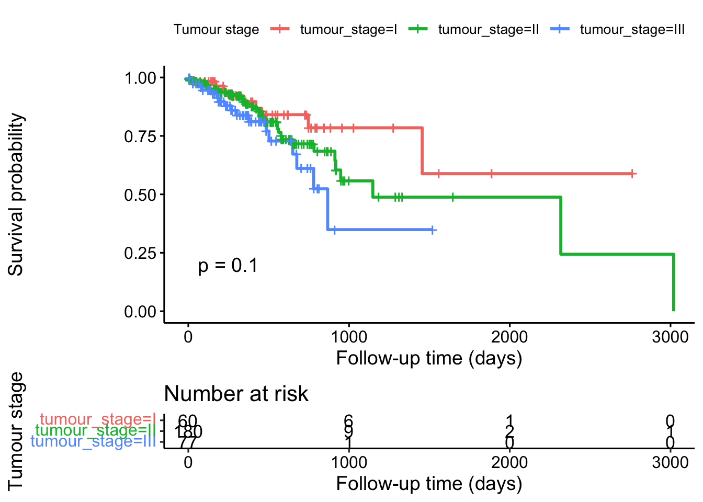
km_her2 = survfit(surv_obj ~ her2_status, data = brca_surv)
ggsurvplot(
km_her2,
data = brca_surv,
conf.int = FALSE,
xlab = "Follow-up time (days)",
ylab = "Survival probability",
legend.title = "HER2 status",
risk.table = TRUE,
pval = TRUE
)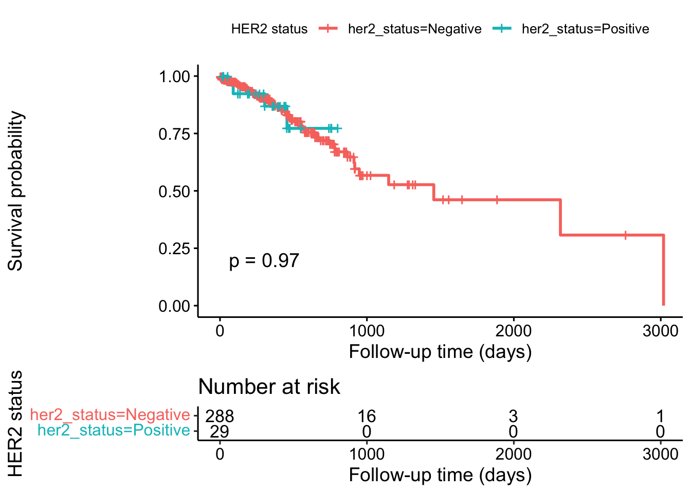
Kaplan–Meier curves were also stratified by tumour stage (I, II, III) and by HER2 receptor status. These plots allow visual comparison of survival across subgroups. In both cases, a risk table was included to show how many individuals remained under observation at different time points.
Comparison
# Log-rank test: tumour stage
logrank_stage = survdiff(surv_obj ~ tumour_stage, data = brca_surv)
logrank_stage## Call:
## survdiff(formula = surv_obj ~ tumour_stage, data = brca_surv)
##
## N Observed Expected (O-E)^2/E (O-E)^2/V
## tumour_stage=I 60 9 14.2 1.910307 2.5322
## tumour_stage=II 180 36 36.2 0.000938 0.0023
## tumour_stage=III 77 17 11.6 2.507338 3.1650
##
## Chisq= 4.5 on 2 degrees of freedom, p= 0.1# Log-rank test: HER2 status
logrank_her2 = survdiff(surv_obj ~ her2_status, data = brca_surv)
logrank_her2## Call:
## survdiff(formula = surv_obj ~ her2_status, data = brca_surv)
##
## N Observed Expected (O-E)^2/E (O-E)^2/V
## her2_status=Negative 288 58 57.93 9.39e-05 0.00145
## her2_status=Positive 29 4 4.07 1.34e-03 0.00145
##
## Chisq= 0 on 1 degrees of freedom, p= 1Results
Overall survival
The overall Kaplan–Meier curve shows a gradual decline in survival probability over the follow-up period. Most patients remain alive during the first part of follow-up, and the curve flattens out after roughly 4 years, indicating that a sizeable fraction of patients survive long-term. The median survival time is approximately 1500 days, meaning that half of the cohort is expected to be alive beyond this time point.The step-wise drops in the curve correspond to observed deaths, and the tick marks indicate censored observations (patients last seen alive at that time).
Survival by tumour stage
Kaplan–Meier curves stratified by tumour stage (I, II, III) suggest that patients with more advanced disease tend to have poorer survival (Figure Y). Stage I patients generally have the highest estimated survival probabilities throughout follow-up, Stage II patients are intermediate, and Stage III patients have the lowest survival, especially after about 1,000 days.
A log-rank test comparing the three stages gives a p-value of 0.10. This is larger than the conventional 0.05 threshold, so there is no strong statistical evidence of a difference in survival across tumour stages in this dataset. However, the pattern of the curves is consistent with the expected clinical trend of worse survival for higher stage disease.
Survival by HER2 status
Kaplan–Meier curves stratified by HER2 status (positive vs negative) are almost completely overlapping (Figure Z). The log-rank test yields a p-value of 0.97, indicating no evidence of a difference in survival between HER2-positive and HER2-negative patients in this sample. This result should be interpreted cautiously because the HER2-positive group is relatively small (29 patients vs 288 HER2-negative), so the comparison may have limited power to detect modest differences.
7) Discussion
Across this cohort of 334 surgically treated breast cancer patients, we found that basic clinical characteristics and the four available protein biomarkers carried only modest prognostic information for survival status at last follow-up. Descriptively, most patients were middle-aged or older, had infiltrating ductal carcinoma, and presented with stage I–II disease. Age did not differ meaningfully between patients who were alive versus dead at last contact, and contingency‐table analyses showed no statistically significant association between survival status and either tumour stage or histologic subtype, despite patterns that were directionally consistent with worse outcomes in higher stages.
The protein biomarkers also showed limited differentiation across clinical groups. Mean expression levels of Protein1–Protein4 were similar by stage and by histology, and one-way ANOVA models (with assumptions reasonably satisfied) did not detect significant group differences after multiple-testing correction. Correlation analyses suggested that the four proteins were not perfectly redundant but also did not reveal any single marker with clearly distinct behaviour. In multivariable logistic regression, a model including age, tumour stage, surgery type, and all four proteins achieved only modest discrimination for death versus survival on cross-validation, indicating that this combination of clinical and biomarker information explains only part of the variability in outcomes.
Time-to-event analyses told a similar story. The overall Kaplan–Meier curve showed relatively good long-term survival, with a gradual decline in survival probability over several years. Stratified curves by tumour stage displayed the expected ordering (stage III tending to have poorer survival than stages I and II), but the log-rank test did not provide strong statistical evidence for differences between stages in this dataset. Survival curves by HER2 status were almost completely overlapping, and the log-rank test again showed no evidence of separation. Taken together, these results suggest that, in this relatively small observational dataset, conventional clinical variables and this limited protein panel provide only weak additional prognostic information, underscoring the need for larger cohorts and richer molecular profiling to more precisely characterise factors that drive breast cancer outcomes.